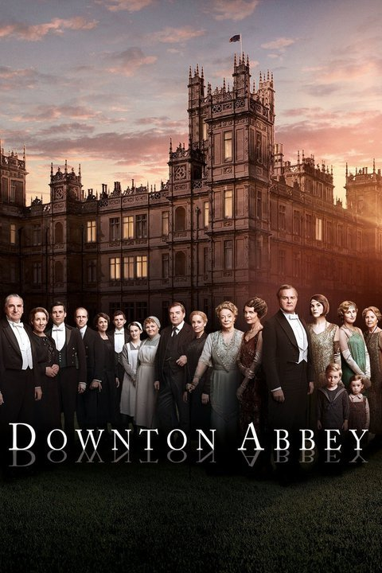

Downtown Abbey (Aired 2010-2015)
Rating: 8.7/10
Age Restriction: TV-PG
A chronicle of the lives of the Crawley family and their servants, beginning in the years leading up to World War I.
Creator: Julian Fellowes
Cast
Hugh Bonneville as .... Robert Crawley, Earl of Grantham
Laura Carmichael as .... Lady Edith Crawley
Jim Carter as .... Charles Carson
Brendan Coyle as .... John Bates
Michelle Dockery as .... Lady Mary Crawley
Joanne Froggatt as .... Anna Bates
Rob James-Collier as .... Thomas Barrow